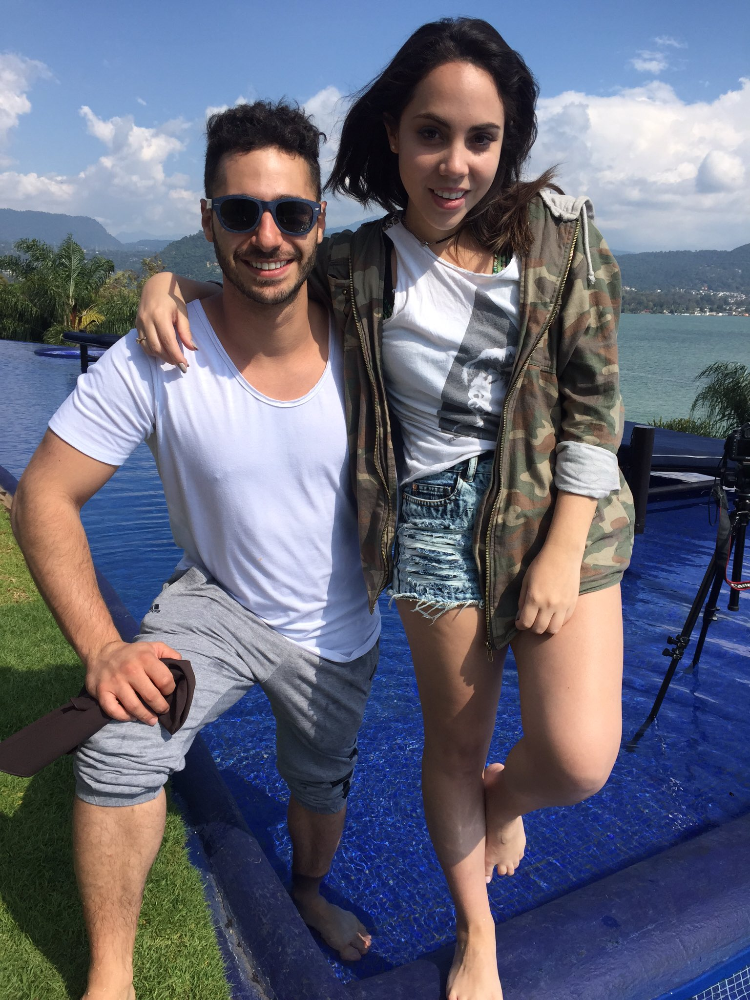

KATY TRAVELS
Mi Web Personal
NOTICIA
Hermanos Amados
Katy tiene dos hermanos mayores, ella es la menor y la consentida de una familia peruana amante de las tradiciones y muy cariñosa. Esta mujer influyente presume a un hermoso sobrino que ama con todas las ganas.
Su familia siempre la apoyó en todos sus proyectos, en primer lugar para que estudiara Mercadotecnia y Marketing de Moda. Esquivel cuenta que muchos de sus tips de belleza y moda los aprendió de su mamá, de sus amigas y de su abuela. También ha mencionado en diversas oportunidades que su juventud fue un poco difícil.
NOTICIA
Moda, viaje y belleza: éxito en las redes
Katy Esquivel, con 1.35 millones de suscriptores en su canal de YouTube Katy The Chic, es una apasionada de los viajes. En este espacio, creado hace cuatro años, puedes descubrir sitios espectaculares para pasar unas vacaciones, sus looks para cada aventura y los maquillajes más locos que ha tenido que hacerse en sitios inesperados, como en un bote, por ejemplo.
Esta influyente del mundo 2.0 destaca por sus outfits frescos, deportivos, sensuales y con ciertos toques de vintage. Los makeup que suele usar van más hacia lo natural y glam. Le gustan los tonos shimmer en los ojos, los colores rosas y labiales que aporten brillo y naturalidad.